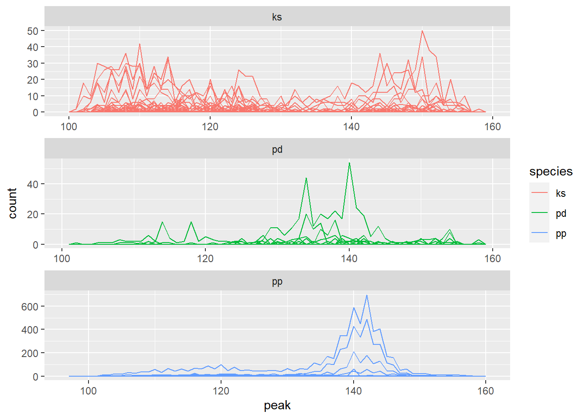
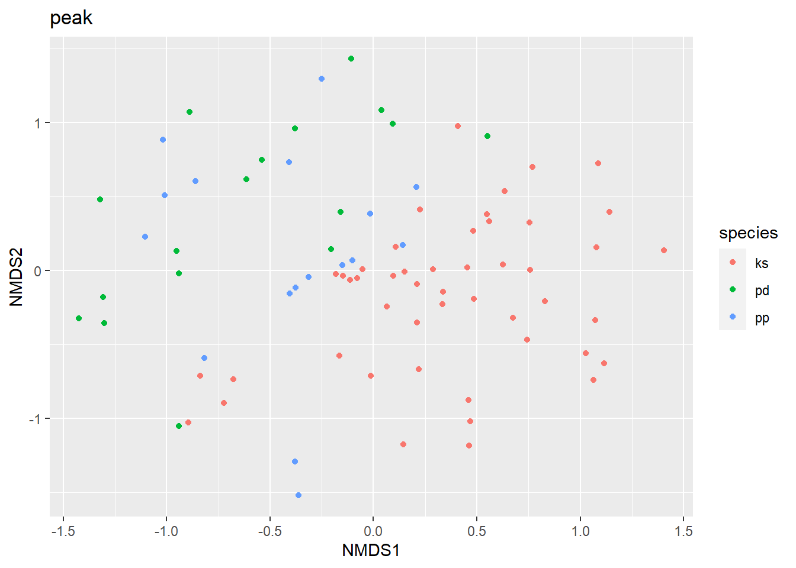
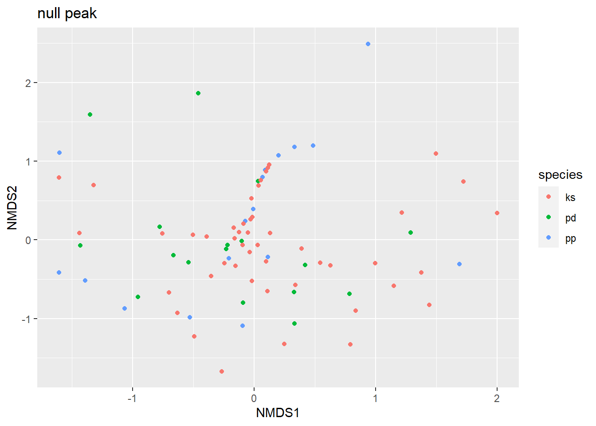

library(vegan)
library(tidyverse)
library(identidrift)
library(PAMpal)
s <- bindStudies(pd_mtc, pp_mtc, ks_mtc) #training data set
c <- getClickData(s) #get tidy dataClustering NBHF Acoustic Events
Setup
Intro and objectives
Our objective in this study is to classify acoustic events to species. Events we define as bouts of clicks that occur when an animal or group of animals encounters the recorder. We hypothesize that click features depend on the species that produced them, so what advantage do we give ourselves by seeking to classify events rather than individual clicks? The advantage of classifying events is the ability to overcome poor classification performance at the click level, because the distribution of click classifications within the event is indicative of the correct classification of the event as a whole (Rankin and Archer 2022).
Before trying to perform event classification, we decided we would perform clustering. Clustering would allow us to assess separation between species and help us interpret classifier performance at future stages of the analysis. While it would be possible to cluster individual clicks, I would prefer to cluster events, maintaining consistency in the study by treating the event as the unit of interest. But given that events are collections of clicks, this raises the question of how to reduce this into a unit which can be compared to other events to form clusters.
In this notebook, I demonstrate that acoustic events can be compared by binning and counting the clicks composing them. This method allows a community dissimilarity index to be used to compare events and form clusters of events.
Background
In ecological research, communities are compared to one another by counting the species that appear in each community. This enables the generation of a dissimilarity index between different communities. When applied to plant communities, its easy to picture how this sort of counting would be performed: putting down a quadrat in different places and counting the occurrence of the different plant species inside each quadrat. This same sort of counting procedure is also applied to compare microbial communities, where the data consists of sequences of DNA. In this case, a variety of different operational taxonomic units are defined and the quantity of sequences matching each operational unit are counted to characterize the community. This is analogous to the approach that can be taken with acoustic data when comparing acoustic events.
Method
In an attempt to apply this technique towards comparing acoustic events, I chose an initial variable to use for comparison. I then binned the clicks based on their values in this dimension. For example, if I wanted to compare events on the basis of peak frequency, I would then subdivide the region of the acoustic spectrum from 100-160 kHz to form bins of a chosen width, say 1 kHz. Then, for every event, I would count clicks in each bin (i.e. having a peak frequency between 100-101 kHz, 101-102 kHz, … 159-160 kHz).
Figure 1 illustrates how this process works. Faceted by species, you can see that each individual line in the plot follows the distribution of peak frequencies for an individual event. You will notice that this approach is sensitive to the sizes of events. Some events contain many more clicks that others, which is seen by simply comparing the areas under the different event curves. Also note that the scales are different in each panel.
This size discrepancy will influence later stages of this method and we may want to implement rarefaction – sampling to equalize the number of clicks used for each event – to control for this.

Once the counts are available for all the events, the dissimilarity index between all events could then be generated using the methods established by community ecologists available through the vegan package. The routine is is shown the commented code below. The clusters are then shown in Figure 2.
#perform binning procedure using "peak" variable
pk <- identidrift::eventbin(c, peak)
#set seed for reproducibility
set.seed(123)
#generate distance matrix
dist <- vegan::vegdist(pk, method = "bray")
#use distance matrix to perform ordination
nmds <- vegan::metaMDS(dist)
#make cluster plot
scores(nmds) %>%
as_tibble(rownames = "eventId") %>%
left_join(select(c, species, eventId, eventLabel), by="eventId") %>%
ggplot(aes(x = NMDS1, y = NMDS2, color=species))+
geom_point()+
# facet_wrap(~eventLabel) +
ggtitle("peak")
As a next step, I created a null model by shuffling the clicks to redistribute them across all events in the training data set. I preserved the number of events for each species as well as the number of clicks in each event. Then, performing the same procedure for clustering events, you see the results in Figure 3

Discussion
- Events in training data appear to segregate loosely by species.
- In the null model, events appear to cluster more poorly. Is there some sort of artefact in the cloud of points in Figure 3?
- I’d prefer to see the skittles spread out a bit more evenly, as they are in Figure 2.
- Next steps
- How would rarefaction change these results?
- To better visualize the events clusters I could next plot a centroid for each cluster as well as a confidence-interval type ellipsoid, which I have seen in many other plots of this type.
References
Rankin, Shannon, and Frederick Archer. 2022. “BANTER: A User’s Guide to Acoustic Classification.” https://taikisan21.github.io/PAMpal/banterGuide.html#24_Interpret_BANTER_Results.